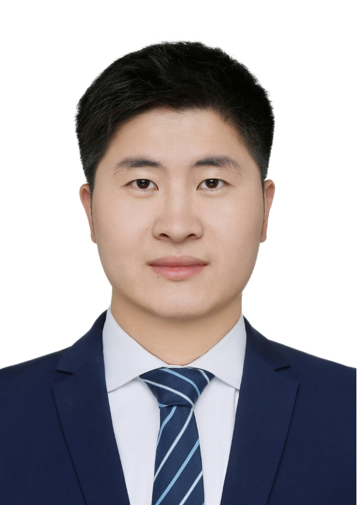

|  |
Guohui Zhan /占国慧 1996年9月生, 中共党员 Email: ghzphysics@163.com [English Version] |
[6] Guohui Zhan, Minji Shi, Zhilong Yang, Haijun Zhang. A Programmable k·p Hamiltonian Method and Application to Magnetic Topological Insulator MnBi2Te4[J]. Chinese Physics Letters, 2021, 38(7): 077105. [DOI], [PDF]
[5] 占国慧, 王怀强, 张海军. 反铁磁拓扑绝缘体与轴子绝缘体——MnBi2Te4系列磁性体系的研究进展[J]. 物理, 2020, 49(12): 817-827. s [Link], [PDF]
[4] Meiling Xu, Guo-Hui Zhan(Co-first author) et. al. PT-symmetry-protected Dirac states in strain-induced hidden MoS2 monolayer[J], Phys. Rev. B, 100,235435(2019). [DOI], [PDF]
[3] Lian-Lian Zhang, Ze-Zhong Li, Guo-Hui Zhan et. al. Eigenenergies and quantum transport properties in a non-Hermitian quantum-dot chain with side-coupled dots[J]. Phys. Rev. A, 99,032119(2019). [DOI], [PDF]
[2] 占国慧, 于殿强, 王郅臻, 张莲莲, 公卫江. PT 对称的非厄米体系的能谱性质[J], 大学物理, 2018, 37(3). [PDF]
[1] Lian-Lian Zhang, Guo-Hui Zhan, Ze-Zhong Li et. al. Effect of PT symmetry in a parallel double-quantum-dot structure[J], Phys. Rev. A, 96,062133(2017). [DOI], [PDF]